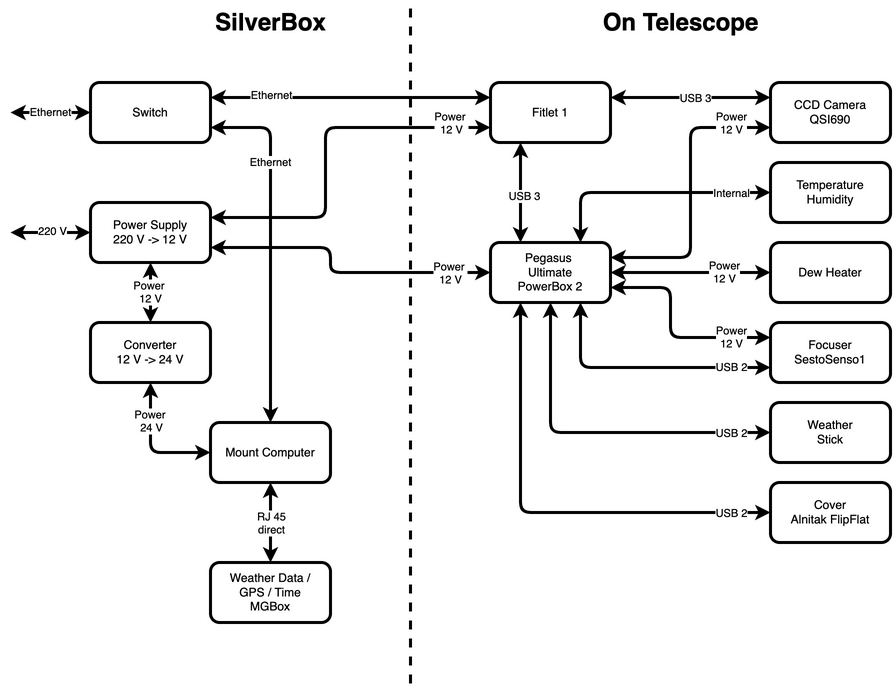

Example setup for rig¶
To give a realistic example I will explain my own setup. I build a portable silver box, which is the housing for the DC / DC converters, the power supply, the ethernet switch, the mount computer and all the switches and connectors needed for attaching the silver box to the mount.
All other components are located directly on the telescope, so the is only an ethernet connection and two 12 V power supply wires to the telescope.
